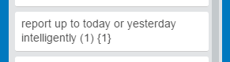
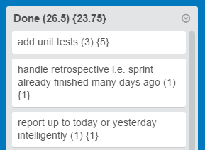
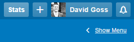
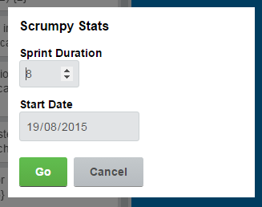
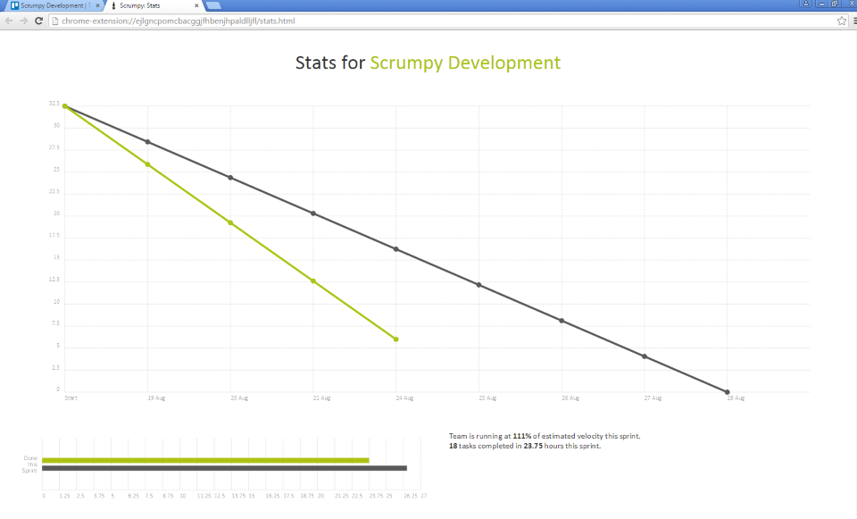

Scrumpy is simple scrum functionality for Trello.
Looks like you've got Scrumpy installed already.
Append your estimates and actuals to your card names with parentheses and braces, like this:
Scrumpy will keep totals at the top of each column and update them every few seconds as you work:
When you're ready to see some charts, there's a new "Stats" button in the top right menu bar:
All you need to enter is the sprint duration (in work days — not including weekends) and the start date (Scrumpy will remember these for each board):
Then, you'll see a simple burndown chart and a few other stats:
Assumptions
Scrumpy does make a few assumptions about the way your team works (#sorrynotsorry):
- You work Monday to Friday (weekends are factored out)
- You use three columns: pending, in-flight and done (but call them whatever you like)
- If you run your stats in the morning, you want to report up to yesterday, but if you run them in the afternoon, you want to include today too
Privacy
Scrumpy doesn't modify any of your Trello data itself or even access it directly; instead, it just relies on your team using the notation for estimates and actuals, and finds all the data it needs in the page. Because of this, there's a pretty low chance of Scrumpy conflicting with another extension/plugin or breaking when Trello.com changes.
Scrumpy is a standalone extension; it doesn't send your data anywhere. Durations and start dates you enter for boards are saved within Chrome for convenience, but that's it.